Про кухню Індії
Індійська кухня характеризується великою різноманітністю спецій, трав та соусів, що варіюються в залежності від регіону. Північна частина Індії відома своїми каррі з густими соусами, таких як тікка масала та сааг, а також стравами з тандуру. Південна Індія славиться своїми гострими стравами, такими як самбар, доса та ідлі. Характерними інгредієнтами є рис, бобові, овочі та кокосове молоко. Індуси часто готують хліб, як-от чапаті чи наан.
Виберіть країну

НаанМ'який дріжджовий хліб, зазвичай випечений у тандирі, подається гарячим як додаток до каррі та інших страв.
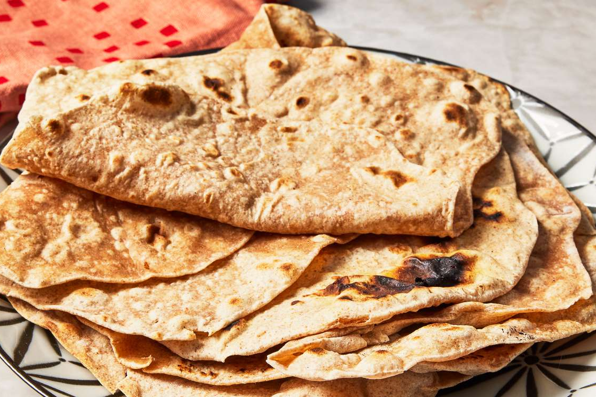
ЧапатіТонкий, прісний хліб, приготовлений на сухій сковороді з пшеничного борошна, поширений у всій Індії.

ПаратхаБагатошаровий хліб, обсмажений на маслі або гхі, часто фарширується картоплею, овочами або іншими начинками.
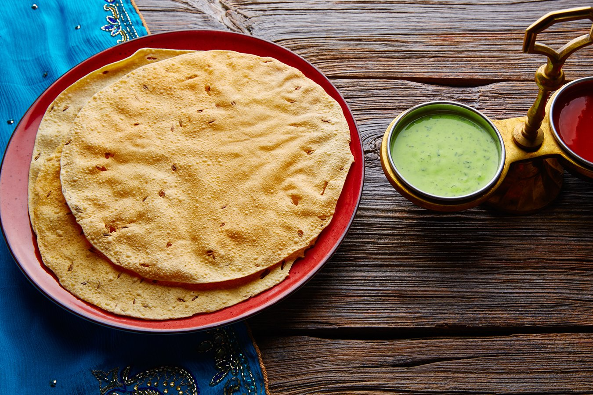
ПападамХрусткий тонкий корж з бобових борошен (наприклад, з урад далу), що часто подається як закуска або гарнір.
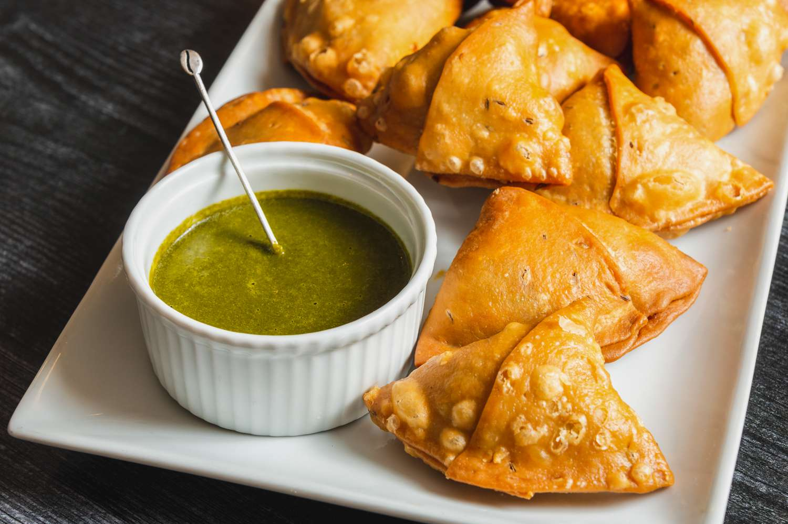
СамосаТрикутні смажені пиріжки з тонкого тіста, начинені картоплею, горохом, спеціями та іноді м'ясом.

Пані-пуріПопулярна вулична страва: маленькі хрусткі кульки, наповнені пряним водяним соусом, картоплею або нутом.
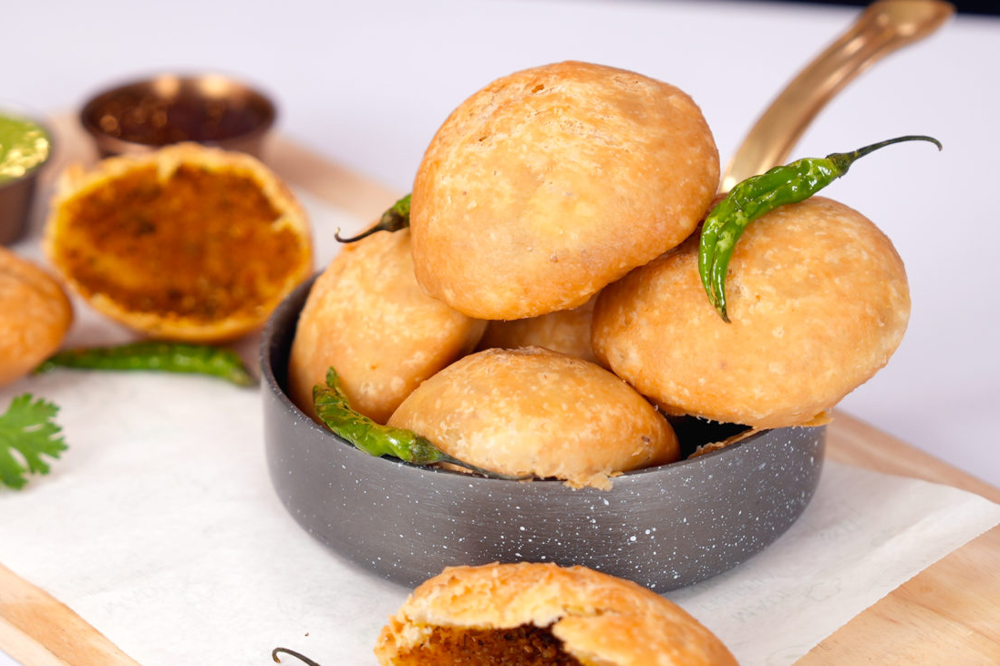
КачоріСмажені круглі пиріжки, зазвичай начинені пряним далом (бобовими) або картоплею, популярна закуска.
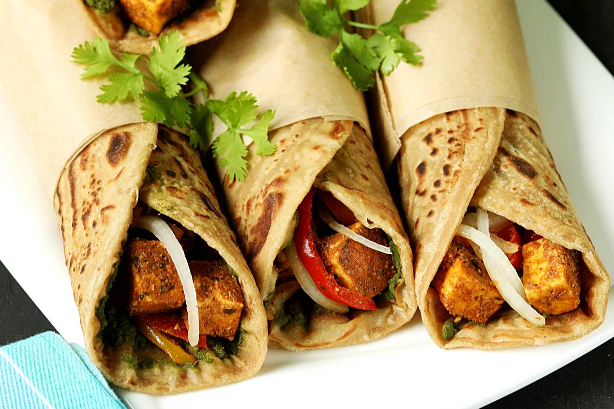
Рулети КатіІндійські рулети з коржів, які наповнюються смаженим м’ясом, овочами та спеціями, зазвичай подаються як вулична їжа.
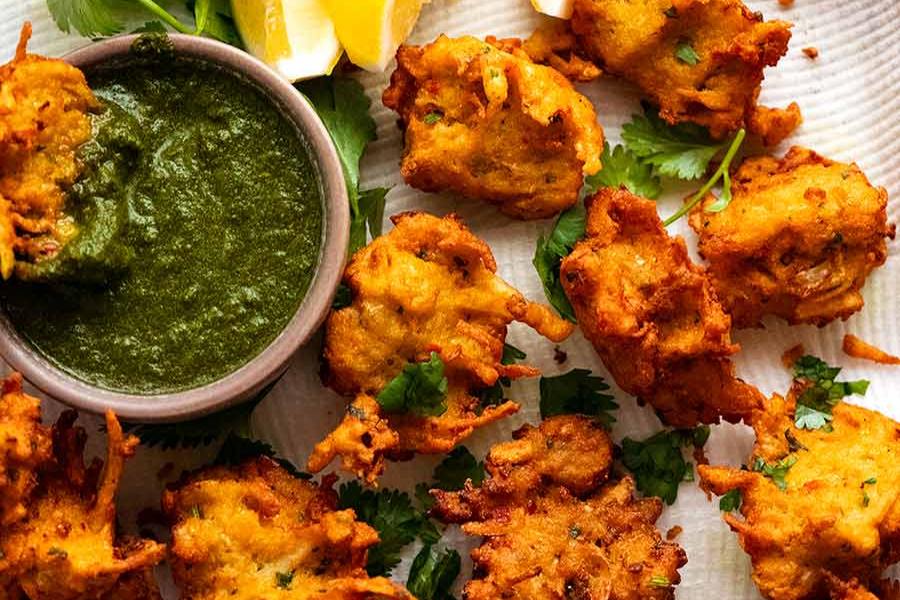
ПакораСмажені овочеві шматочки в тісті з нутового борошна, популярна закуска, особливо під час дощової погоди.
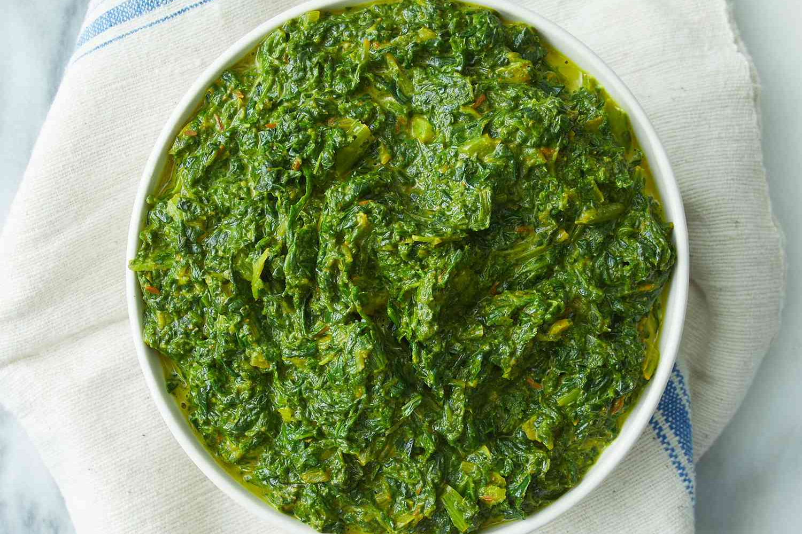
СагаПряне блюдо з листової зелені, найчастіше зі шпинату або гірчиці, подається як гарнір до м'ясних або овочевих страв.
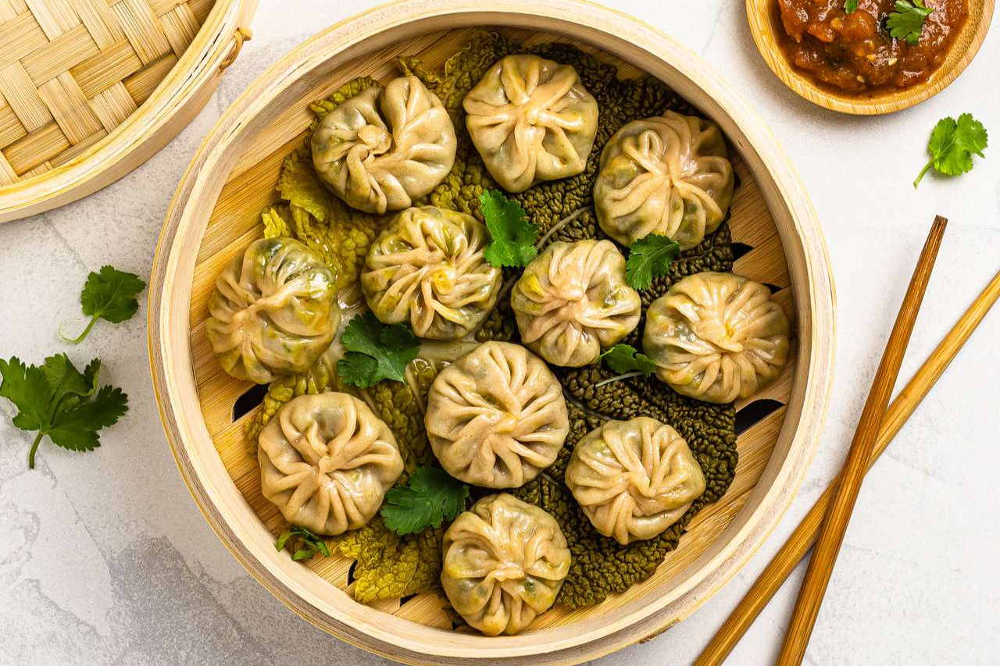
МомоПарові пельмені, поширені в регіоні Гімалаїв, часто фаршируються м'ясом або овочами, подаються з соусом.

СамбарПряний південноіндійський суп на основі бобових, з овочами та тамариндом, який подається з рисом або ідлі.
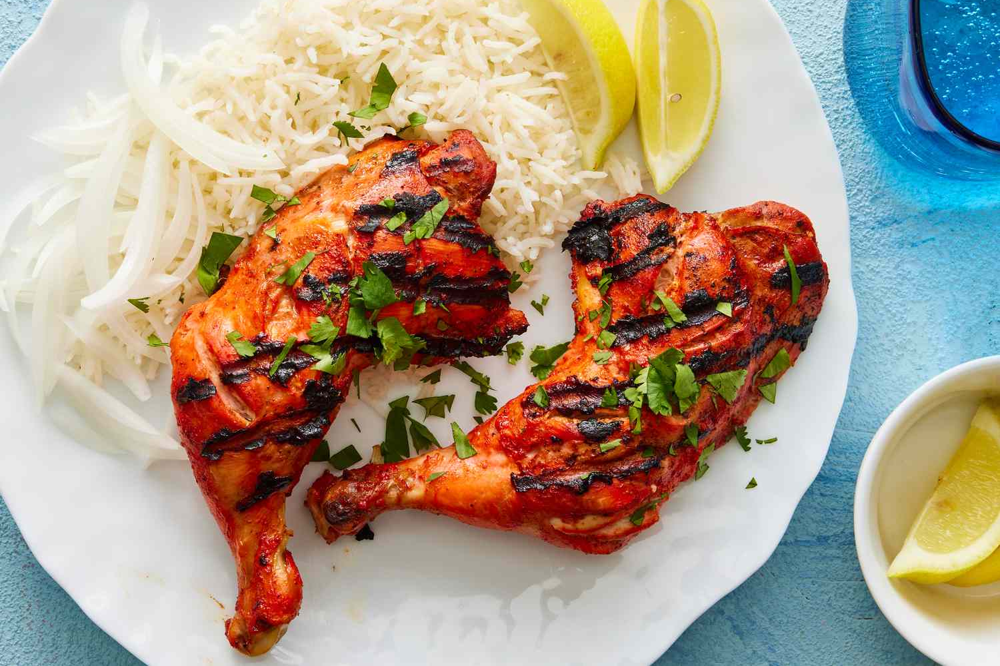
ТандуріПопулярна індійська страва пенджабського походження, це мариновані курчата, запечені в печі тандурі.

Курка тікка масалаПопулярна індійська страва, що складається з маринованого курячого м’яса, запеченого на грилі і потім приготованого в ароматному соусі з томатів, йогурту та спецій.
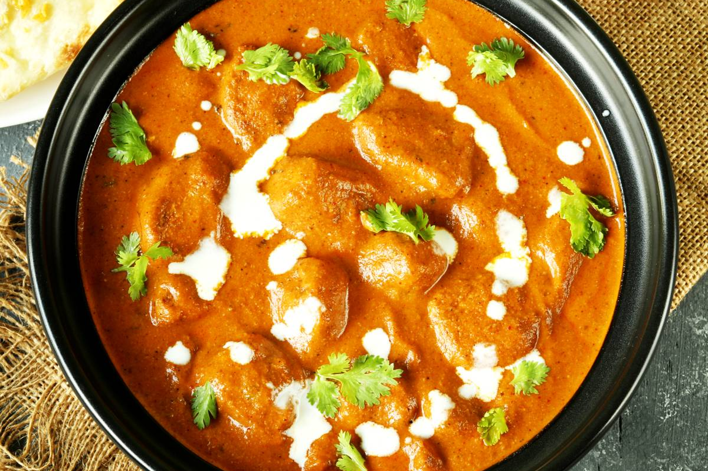
Мург макхані (Курча в маслі)Ніжна курка, приготована в густому томатно-вершковому соусі з маслом та ароматними спеціями.
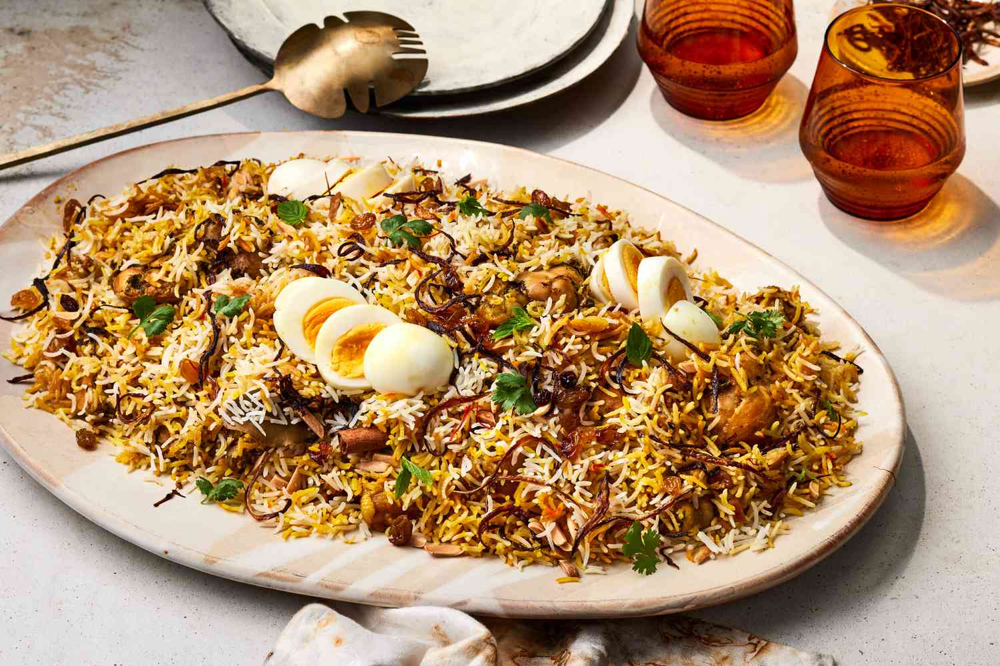
Бір'яніАроматний плов з довгозернистого рису басматі, змішаного зі спеціями, м'ясом або овочами, популярний по всій Індії.
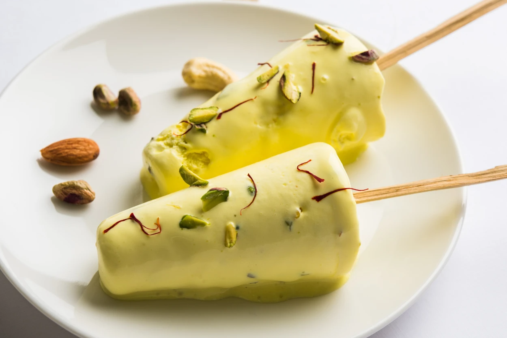
КульфіТрадиційне індійське морозиво, зроблене з загущеного молока, часто ароматизоване кардамоном, фісташками або манго.
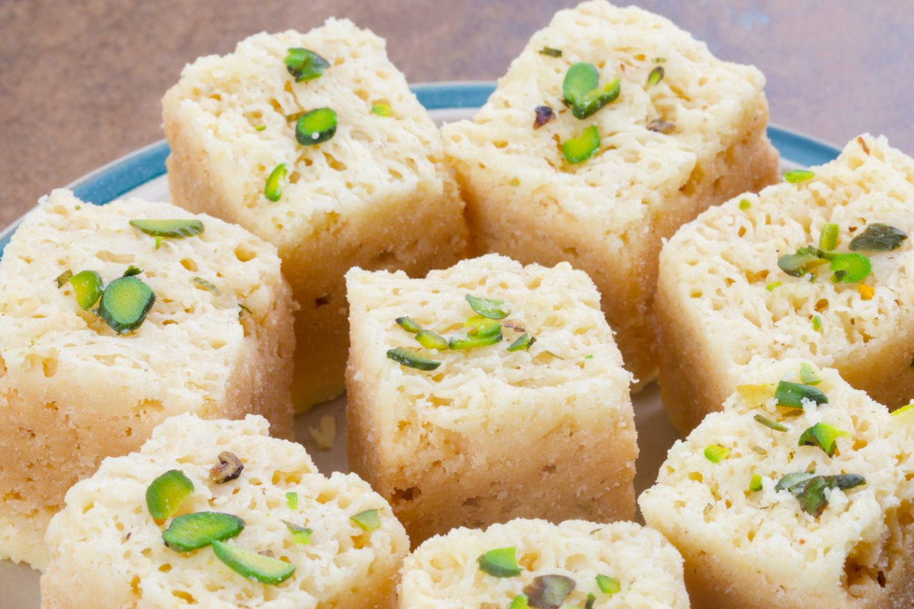
БурфіІндійський солодкий десерт з молока та цукру, часто з додаванням горіхів, кокосу або ароматизаторів, таких як кардамон.
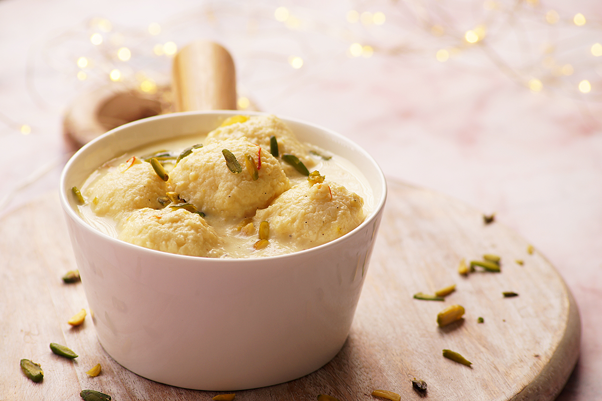
Рас малайДесерт, що складається з м'яких сирних кульок, замочених у густому підсолодженому молоці з ароматом кардамону.
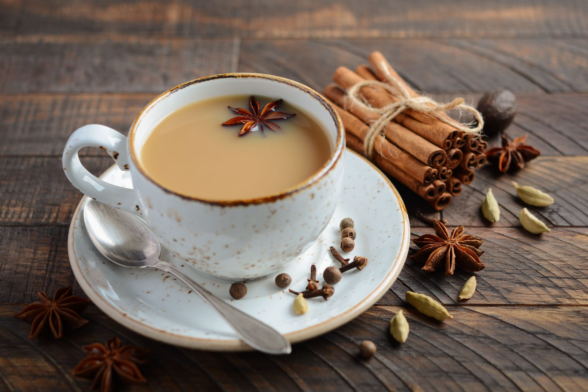
Чай МасалаПряний індійський чай з молоком, заварений зі спеціями, такими як кардамон, гвоздика, кориця і імбир.